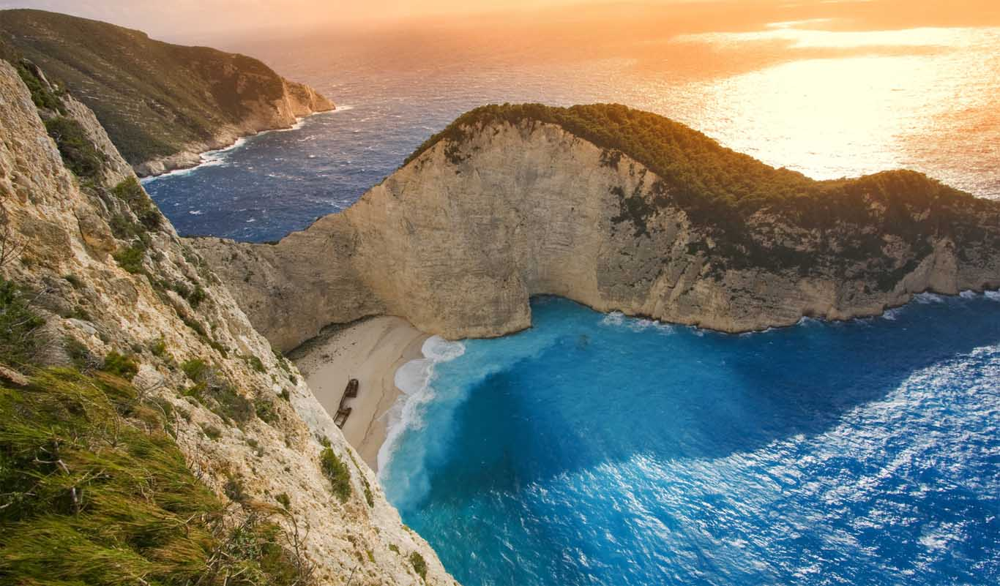
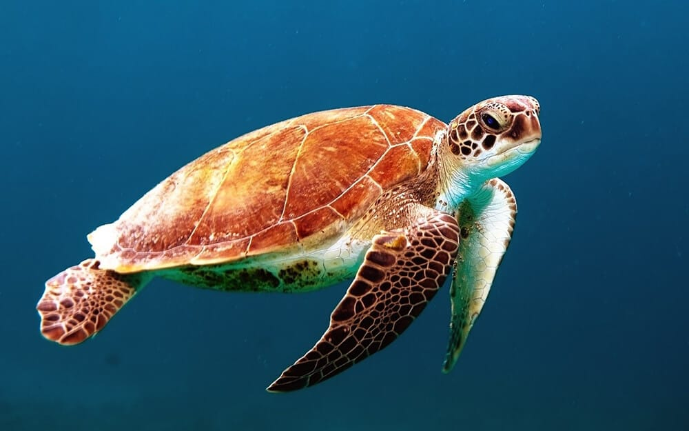
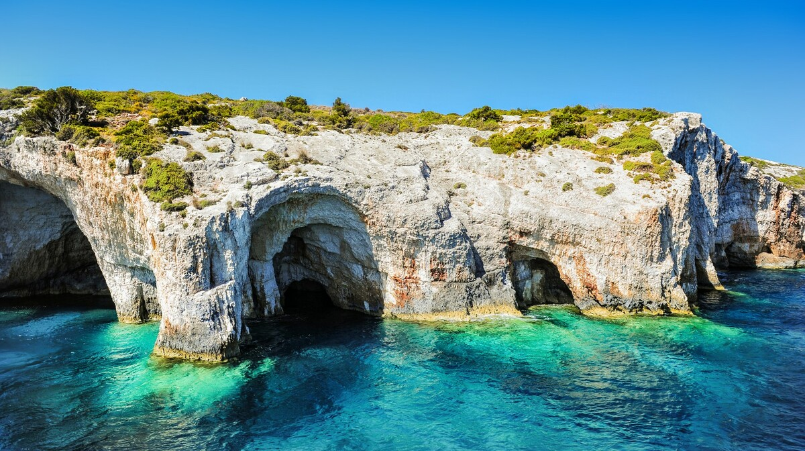

<!DOCTYPE html>
<html>
    <head>
        <title>Zakintos</title>
        <link rel="stylesheet"href="zakintos.css">
    </head>
</html>
<body>  <ul>
    <li><a href="Početna stranica.html">Početna stranica</a></li>
    <li><a href="O Grčkoj.html">O Grčkoj</a></li>
    <li><a href="Destinacije.html">Destinacije</a></li>
    <li><a href="Kultura.html">Kultura</a></li>
</ul>
 <h1 class="Zakintos"><center>Zakintos</center></h1>
 <br><br><br><br><br><br><br><br><br><br><br><br><br><br><br><br><br><br><br><br><br><br><br><br><br>
 <p>Zakintos, poznat i kao Zante, jedan je od najpopularnijih jonskih otoka, poznat po zadivljujućim plažama, kristalno čistom moru i živopisnoj prirodi. Otok je idealna destinacija za odmor, zabavu i istraživanje grčke kulture.</p>
 <h2>Priroda i plaže</h2>
 <p>Najpoznatija atrakcija otoka je plaža Navagio (Shipwreck Beach) sa spektakularnim bijelim pijeskom i tirkiznim morem. Osim nje, Zakintos obiluje šljunčanim i pješčanim plažama, uvalama i skrivenim zaljevima, savršenim za kupanje i sunčanje.</p>
 <h2>Povijest i kultura</h2>
 <p>Zakintos ima bogatu povijest i kulturnu baštinu koja se ogleda u starim crkvama, venecijanskim palačama i muzejima. Otok je stoljećima bio pod različitim vladavinama, što mu daje jedinstveni šarm i arhitektonsku raznolikost.</p>
 <h2>Tradicija i gastronomija</h2>
 <p>Zakintos ima bogatu povijest i kulturnu baštinu koja se ogleda u starim crkvama, venecijanskim palačama i muzejima. Otok je stoljećima bio pod različitim vladavinama, što mu daje jedinstveni šarm i arhitektonsku raznolikost.</p>
 <h2>Turizam</h2>
 <p>Grad Zakintos, glavni grad otoka, nudi šarmantne ulice, kafiće i restorane, dok priroda otoka pruža mogućnosti za planinarenje, biciklizam, ronjenje i izlete brodom. Zakintos je idealan za obitelji, parove i avanturiste koji žele istražiti ljepote Jonskog mora.<br>
Zakintos je savršena kombinacija prirodne ljepote, kulturne baštine i zabave, pružajući nezaboravan odmor u srcu Grčke.</p>
<h2>Najvažnije atrakcije</h2>
<div class="galerija">
    <div class="stavka">
        <h3>Plaža Navagio</h3>
        
        <p>Jedna od najfotografiranijih plaža na svijetu, poznata po tirkiznom moru, bijelom šljunku i olupini starog broda nasukanog na obali, dostupna isključivo brodom.
 </p>
    </div>

    <div class="stavka">
        <h3>Kornjače Caretta-Caretta</h3>
        
       <p> Simbol otoka; mogu se vidjeti u Nacionalnom pomorskom parku, posebno u uvali Laganas i na plaži Gerakas, gdje polažu jaja.</p>
    </div>

    <div class="stavka">
        <h3>Plave špilje </h3>
        
        <p>Spektakularne morske špilje s intenzivno plavom vodom, dostupne brodom, idealne za ronjenje i fotografiranje. </p>
    </div>
</div>

<style>
    .galerija {
        display: flex;
        gap: 50px; 
    }

    .stavka {
        text-align: center;
    }

    .stavka img {
        width: 350px;    
        height: 250px;
        display: block;
    }

    .stavka a {
        display: block;
        margin-top: 8px;
        text-decoration: none;
        font-size: 20px;
        color: #000;
    }
</style>
<br><br><br><br><br><br><br><br><br><br>
</body>
<footer class="footer">
  <p> Hana Šerbeđija<br> 2.c</p>
</footer>